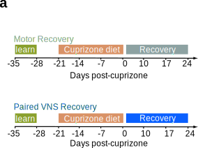
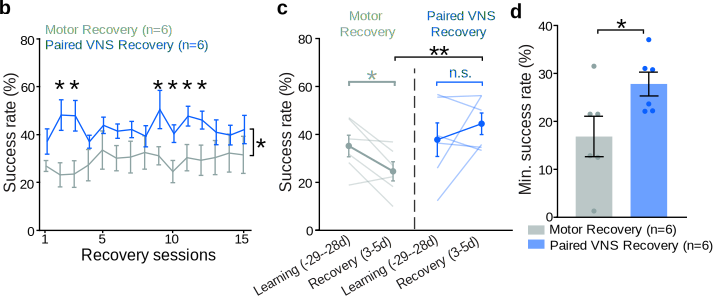
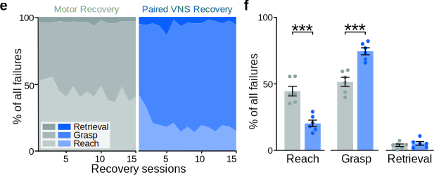
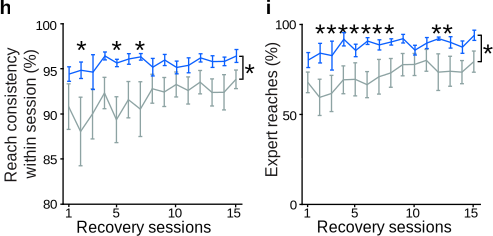

Figure 5 Paired VNS Improves Functional Recovery After Demyelination#
Panel A: Experimental Design#
Testing Functional Recovery. To determine if the structural repair driven by Paired VNS translates to functional recovery, we utilized a skilled motor task timeline designed to isolate the recovery phase.

Methodological Timeline (Fig. 5a)
- Training: Mice were trained to proficiency on the forelimb reach task for 7 days.
- Injury: All mice underwent a 3-week cuprizone diet to induce demyelination.
- Recovery: Mice underwent 15 rehabilitation sessions (5 days/week for 3 weeks). Paired VNS was delivered only during successful reaches in this phase.
Panels B, C, & D: Rapid Functional Rescue#
VNS Rescues Performance. While spontaneous recovery (Motor Learning) was slow and incomplete, Paired VNS rapidly restored performance to pre-injury levels.

Show code cell source
import pandas as pd
from IPython.display import display, HTML
# Formatting function
def pretty_print_stats(df, title):
print(f"\n{title}")
# Highlight significant p-values
def highlight_sig(val):
if isinstance(val, str) and ('*' in val or '<' in val) and not ('n.s.' in val):
return 'background-color: #d4edda; font-weight: bold;'
return ''
styled_df = df.style.applymap(highlight_sig, subset=['P-Value']).set_table_styles(
[{'selector': 'th', 'props': [('text-align', 'left')]}]
).hide(axis='index')
display(HTML(styled_df.to_html(classes='table table-striped table-hover', index=False)))
# --- PANELS B, C, D DATA (Functional Recovery) ---
data_bcd = {
"Comparison": [
"Overall Recovery Rate (Fig 5B)",
"Early Recovery vs Pre-Injury (ML Control) (Fig 5C)",
"Early Recovery vs Pre-Injury (Paired VNS) (Fig 5C)",
"Early Recovery (Group Comparison) (Fig 5C)",
"Minimum Performance (Stability) (Fig 5D)"
],
"Paired VNS Mean ± SEM": [
"42.99 ± 3.19 %",
"44.41 ± 4.49 % (Recovery)",
"44.41 ± 4.49 % (Recovery)",
"44.41 ± 4.49 %",
"27.80 ± 2.48 %"
],
"Motor Learning Mean ± SEM": [
"29.17 ± 4.17 %",
"24.56 ± 4.03 % (Recovery)",
"N/A",
"24.56 ± 4.03 %",
"16.87 ± 4.22 %"
],
"Test": [
"REML Mixed Model",
"Paired t-test",
"Paired t-test",
"Student's t-test",
"Student's t-test"
],
"P-Value": [
"0.036 (*)",
"0.041 (*)",
"0.36 (n.s.)",
"0.0081 (**)",
"0.049 (*)"
],
"Conclusion": [
"VNS significantly enhances overall recovery",
"Controls show significant functional deficit",
"VNS fully rescues performance (No deficit)",
"VNS significantly outperforms controls early",
"VNS prevents 'bad days' (Higher stability)"
]
}
df_bcd = pd.DataFrame(data_bcd)
# Display
pretty_print_stats(df_bcd, "--- Panels B, C, D Statistics: Functional Rescue & Stability ---")
--- Panels B, C, D Statistics: Functional Rescue & Stability ---
/tmp/ipykernel_130342/3928340493.py:13: FutureWarning: Styler.applymap has been deprecated. Use Styler.map instead.
styled_df = df.style.applymap(highlight_sig, subset=['P-Value']).set_table_styles(
| Comparison | Paired VNS Mean ± SEM | Motor Learning Mean ± SEM | Test | P-Value | Conclusion |
|---|---|---|---|---|---|
| Overall Recovery Rate (Fig 5B) | 42.99 ± 3.19 % | 29.17 ± 4.17 % | REML Mixed Model | 0.036 (*) | VNS significantly enhances overall recovery |
| Early Recovery vs Pre-Injury (ML Control) (Fig 5C) | 44.41 ± 4.49 % (Recovery) | 24.56 ± 4.03 % (Recovery) | Paired t-test | 0.041 (*) | Controls show significant functional deficit |
| Early Recovery vs Pre-Injury (Paired VNS) (Fig 5C) | 44.41 ± 4.49 % (Recovery) | N/A | Paired t-test | 0.36 (n.s.) | VNS fully rescues performance (No deficit) |
| Early Recovery (Group Comparison) (Fig 5C) | 44.41 ± 4.49 % | 24.56 ± 4.03 % | Student's t-test | 0.0081 (**) | VNS significantly outperforms controls early |
| Minimum Performance (Stability) (Fig 5D) | 27.80 ± 2.48 % | 16.87 ± 4.22 % | Student's t-test | 0.049 (*) | VNS prevents 'bad days' (Higher stability) |
Behavioral Insight: Immediate Rescue
The recovery trajectories revealed a fundamental difference in how the brain recovered function:
The recovery trajectories revealed a fundamental difference in how the brain recovered function:
- Deficit vs. Rescue (Fig. 5c): Control mice showed a significant performance deficit in early recovery compared to their pre-injury baseline (p=0.041). In contrast, Paired VNS mice showed no deficit (p=0.36), indicating a full functional rescue within the first 3 days.
- Stability (Fig. 5d): Paired VNS also raised the "floor" of performance—significantly improving the success rate on each animal's worst day (p=0.049).
Panels E & F: Error Classification#
Improving Accuracy. To understand why VNS animals succeeded more often, we classified every failed attempt into specific error types.

Show code cell source
# --- PANELS E & F DATA (Error Classification) ---
data_ef = {
"Metric": [
"Reach Failure % (Targeting Error)",
"Grasp Failure % (Dexterity Error)"
],
"Effect Direction": [
"Paired VNS Decreases Failures",
"Paired VNS Increases % of Errors"
],
"Test": [
"Student's t-test (t=5.49)",
"Student's t-test (t=5.35)"
],
"P-Value": [
"0.0003 (***)",
"0.0003 (***)"
],
"Interpretation": [
"VNS significantly improves reach accuracy",
"Animals reach the pellet more often (shift to grasp errors)"
]
}
df_ef = pd.DataFrame(data_ef)
# Display
pretty_print_stats(df_ef, "--- Panels E & F Statistics: Reach Accuracy vs Grasp ---")
--- Panels E & F Statistics: Reach Accuracy vs Grasp ---
/tmp/ipykernel_130342/3928340493.py:13: FutureWarning: Styler.applymap has been deprecated. Use Styler.map instead.
styled_df = df.style.applymap(highlight_sig, subset=['P-Value']).set_table_styles(
| Metric | Effect Direction | Test | P-Value | Interpretation |
|---|---|---|---|---|
| Reach Failure % (Targeting Error) | Paired VNS Decreases Failures | Student's t-test (t=5.49) | 0.0003 (***) | VNS significantly improves reach accuracy |
| Grasp Failure % (Dexterity Error) | Paired VNS Increases % of Errors | Student's t-test (t=5.35) | 0.0003 (***) | Animals reach the pellet more often (shift to grasp errors) |
Mechanism of Improvement: Better Targeting
The breakdown of failure modes (Fig. 5f) reveals that Paired VNS specifically refined the targeting phase of the reach:
The breakdown of failure modes (Fig. 5f) reveals that Paired VNS specifically refined the targeting phase of the reach:
- Reach Failures (Decreased): VNS animals made significantly fewer "Reach" errors (missing the slot entirely) (p=0.0003).
- Grasp Failures (Increased): Consequently, a higher percentage of their errors were "Grasp" failures. This is a positive sign—it means the animals were successfully targeting the pellet (getting to the "Grasp" phase) more often, even if they didn't always secure it.
Panel G: Kinematic Visualization#
Defining the “Expert” Reach. We visualized the 3D trajectory of the forelimb to assess the quality of movement.

Visualizing Consistency
The representative traces (Fig. 5g) illustrate the difference in motor control:
The representative traces (Fig. 5g) illustrate the difference in motor control:
- Motor Learning (Top): Shows high trial-to-trial variability with disparate trajectories.
- Paired VNS (Bottom): Shows tight clustering of trajectories around the "Expert Reach" (black line), indicating a highly stereotyped, consistent motor command.
Panels H & I: Kinematic Consistency#
Recovering the “Template”. Beyond simple success rates, Paired VNS restored the precise kinematic “template” of the movement.

Show code cell source
# --- PANELS H & I DATA (Kinematics) ---
data_hi = {
"Comparison": [
"Paired VNS vs. Motor Learning",
"Paired VNS vs. Motor Learning"
],
"Metric": [
"Reach Consistency (Within-Session) (Fig 5H)",
"% Expert Reaches (Trajectory Similarity) (Fig 5I)"
],
"Paired VNS Mean ± SEM": [
"95.64 ± 0.46 %",
"88.34 ± 2.10 %"
],
"Motor Learning Mean ± SEM": [
"91.74 ± 1.58 %",
"71.59 ± 6.85 %"
],
"Test": [
"REML Mixed Model F(1)=5.58",
"REML Mixed Model F(1)=5.47"
],
"P-Value": [
"0.040 (*)",
"0.041 (*)"
],
"Conclusion": [
"Significantly more consistent execution",
"Rapid return to optimal 'Expert' trajectory"
]
}
df_hi = pd.DataFrame(data_hi)
# Display
pretty_print_stats(df_hi, "--- Panels H & I Statistics: Kinematic Fidelity ---")
--- Panels H & I Statistics: Kinematic Fidelity ---
/tmp/ipykernel_130342/3928340493.py:13: FutureWarning: Styler.applymap has been deprecated. Use Styler.map instead.
styled_df = df.style.applymap(highlight_sig, subset=['P-Value']).set_table_styles(
| Comparison | Metric | Paired VNS Mean ± SEM | Motor Learning Mean ± SEM | Test | P-Value | Conclusion |
|---|---|---|---|---|---|---|
| Paired VNS vs. Motor Learning | Reach Consistency (Within-Session) (Fig 5H) | 95.64 ± 0.46 % | 91.74 ± 1.58 % | REML Mixed Model F(1)=5.58 | 0.040 (*) | Significantly more consistent execution |
| Paired VNS vs. Motor Learning | % Expert Reaches (Trajectory Similarity) (Fig 5I) | 88.34 ± 2.10 % | 71.59 ± 6.85 % | REML Mixed Model F(1)=5.47 | 0.041 (*) | Rapid return to optimal 'Expert' trajectory |
Kinematic Insight: Rapid Consolidation
Deep learning analysis of the reach trajectories confirmed that VNS accelerates the consolidation of motor patterns:
Deep learning analysis of the reach trajectories confirmed that VNS accelerates the consolidation of motor patterns:
- Within-Session Consistency (Fig. 5h): VNS animals showed significantly lower variability between reaches within a single session (95.6% vs 91.7%, p=0.040).
- Expert Reaches (Fig. 5i): Most notably, VNS animals rapidly returned to their "Expert" trajectory. By early recovery, 88% of their reaches matched their optimal kinematic template, compared to only 71% in controls (p=0.041).